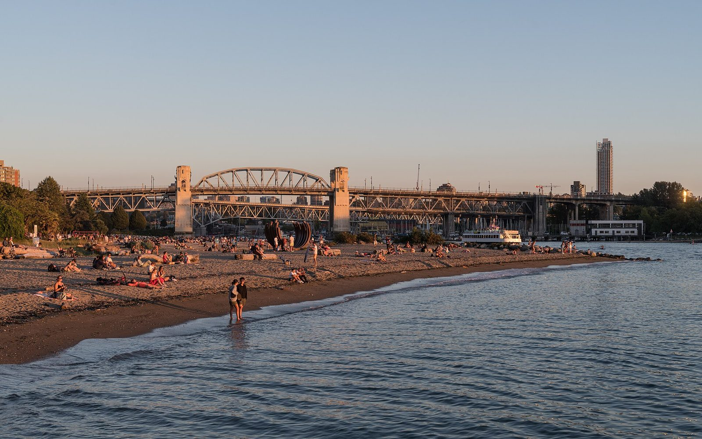

Option C · plaza first
Tables where the stalls were.
Start with a plaza: tables, shade and events, and keep a few stalls for the people who need them.

Sunset Beach pop-up
The Sunset Beach lot’s average daily peak occupancy was 24% in 2019 (Park Board memo). On June 13, 2021 a pop-up plaza opened in the lot, with a mural, picnic tables, ping pong and food trucks (General Manager’s Report).
Chain & Forge and Granville Island 2040
On Granville Island, the Chain & Forge building, mostly an indoor public parkade, became about 9,000 sq ft of retail, and the outdoor lot beside it “will become a large public plaza” (Daily Hive). The island’s 2040 plan says parking is “over a quarter of current land use” and talks about “repurposing buildings and parking lots” (Granville Island 2040).
Concord Community Pop Park
Concord Pacific and PWL Partnership turned a former parking lot at Northeast False Creek into a temporary public park in 2018 (PWL Partnership).
What stays, what changes
- Stays: a short row of accessible, pickup and loading stalls.
- Changes: the rest becomes a paved plaza with shade trees, tables and room for events and food trucks.
The parking we keep
- Pickup and drop-off spots, so a few minutes at a class or a playground never costs $85.
- Accessible stalls, closest to the entrance.
- Trailhead parking, sized to real peak counts.
- Free short stops: nine in ten Ambleside stays are two hours or less (West Vancouver).